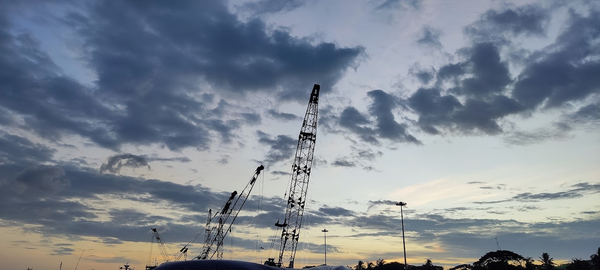

A Day at Chittagong Port
← HomePublished on May 14, 2025
Chittagong Port, the largest seaport in Bangladesh, is a hub of activity and energy. During my visit, I was amazed by the sheer scale of operations, from massive cargo ships to bustling workers ensuring smooth logistics.

The port is not just a place of commerce but also a symbol of Bangladesh's economic growth. Watching the ships sail in and out, I felt a sense of pride in the country's progress and its connection to the wider world.

The energy, the sounds, and the sights of Chittagong Port left a lasting impression on me. It’s a place where hard work meets hope, and where the future of Bangladesh is being shaped every day.